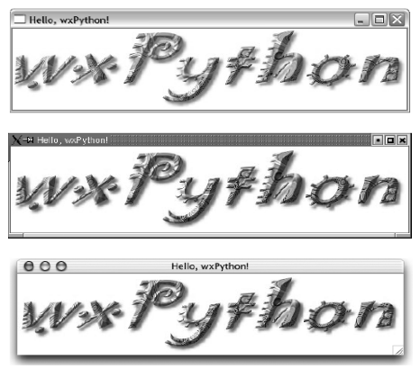

2. Marco Teórico¶
Debido a la naturaleza multidisciplinaria de este trabajo, posiblemente sea leído y evaluado por profesionales o interesados de/en las distintas áreas de incumbecia (química y computación).
Ver también
Dado que no necesariamente se tiene un conocimiento sólido fuera de la especificidad de la profesión, en este capítulo se presentarán conceptos generales (que no pretenten exhautividad pero sí precisión) de las dos áreas, útiles para la comprensión de este trabajo. Para definiciónes de términos puntuales, consulte el glosario.
2.1. Conceptos de equilibrio de fases y sus diagramas¶
2.1.1. Algunas definiciones¶
Un diagrama de fase es un tipo de gráfico utilizado para mostrar las condiciones en las que distintas fases termodinámicas de un sistema pueden ocurrir en equilibrio. Se representa en función de variables que caracterizan el estado intesivo del sistema físicoquímico (funciones de estado).
El estudio introductorio de la termodinámica se centra en sustancias puras o mezclas a composición constante. En este caso, el sistema es descripto por dos variables. Un diagrama de fase típico para estos sistemas, es el Presión vs. temperatura :
La línea verde indica los puntos de congelamiento. La azul los de ebullición. La línea punteada muestra un comportamiento particular del agua.
Así, para determinada presión y temperatura, la sustancia o mezcla constante puede estar en fase líquida, gaseosa o sólida, o bien en un punto crítico. Es decir, qué porcentaje o fracción de la mezcla corresponde a cada una de las dos sustancias del sistema. La composición habitualmente se mide en fracción molar, fracción masa, o concentración molar.
Para sistemas binarios (una mezcla de dos componentes) la composición (o, complementariamente, la densidad) se vuelve una variable del sistema, cuya representación gráfica son curvas en el espacio R³ (gráfico tridimensional). Para un determinado estado T-P-x (x es composición, en general expresada como fracción del compuesto más volátil) el sistema se encuentra en zonas de equilibrio vapor/líquido, líquido/líquido, vapor/sólido, líquido/sólido u otros casos particulares.

Un diagrama P-T-x para un sistema binario de Tipo I.
La proyección ortogonal de estas curvas tridimensionales sobre los planos correspondientes genera los gráficos cartesianos bidimensionales PT, Px, Tx (y sus análogos para densidad) que son típicos de la bibliografía del tema.

Un diagrama T-x para un sistema binario, mostrando la línea crítica y otras informaciones.
El comportamiento termodinámico de los sistemas binarios no es uniforme cualesquiera sean los compuestos de la mezcla. Existen seis tipos de comportamiento, de los cuales los tipos I, II, III y IV (enumerados en orden creciente de complejidad) son los más comunes (todas calculables a través de GPEC). Esta complejidad creciente del comportomaniento se observa en la aparación de fases líquido-líquido, líquido-líquido-vapor, líneas azeotrópicas, etc.
2.1.1.1. Equilibrio termodinámico¶
Según [SM-VN-AG2000] :
(...) se reconoce al equilibrio como una condición estática donde, con el tiempo, no ocurre cambio alguno en las propiedades macroscópicas de un sistema, lo cual implica un balance de todos los potenciales que pueden ocasionar un cambio.
Por ejemplo, un sistema aislado que consta de las fases en contacto estrecho líquido y vapor, con el tiempo alcanza un estado final donde no existe tendencia a que suceda un cambio en sí mismo. La temperatura, la presión y las composiciones de fase logran los valores finales que en adelante permanecen fijos, por lo que el sistema logra el equilibrio [1] .
Los equilibrios entre fases tienen un rol muy importante en la tecnología química, alcanzando una gran diversidad de aplicaciones, principalmente en procesos de separación de la industria química, petroquímica y el sector de hidrocarburos, pero también en novedosos procesos basados en fluidos supercríticos que han alcanzado un gran desarrollo en las últimas décadas. Estos equilibrios pueden presentar cierta complejidad, especialmente a altas presiones, y son representados por medio de distintos tipos de diagramas de fases.
2.1.1.2. Ecuaciones de Estado¶
El modelado cuantitativo de los equilibrios de fases se realiza principalmente utilizando ecuaciones de estado (EoS). Estas son relaciones matemáticas (modelos matemáticos) entre dos o más funciones de estado asociadas a la materia como la temperatura, la presión, el volumen o la energía interna.
Como ejemplo conocido en cualquier curso introductorio de química, la ley del gas ideal es una ecuación de estado, que al considerar el volumen molecular nulo y a las fuerzas de atracción-repulsión despreciables, limita su utilidad para modelar gases reales.

p es la presión absoluta, V el volumen, *T, n la cantidad de materia, y R la constante del gas ideal.
La ecuación de Van der Waals (1873) [2] es una ecuación que generaliza la ecuación de los gases ideales, teniendo en consideración tanto el volumen finito de las moléculas de gas como otros efectos que afectan al término de presiones

a y b son constantes físicas de la sustancia en cuestión.
Muchas de las ecuaciones de estado modernas son mejoras y correcciones a la ecuación original de Van der Waals (denominadas ecuaciones de estado cúbicas). Por ejemplo la ecuación de Redlich–Kwong, Peng-Robinson, Elliott-Suresh-Donohue, etc.
GPEC es capaz de realizar los cálculos usando cinco diferentes ecuaciones de estado (ver :ref:’Requerimientos funcionales’).
2.2. Metodologías de desarrollo de Software¶
2.2.1. Metodologías Ágiles¶
El desarrollo de este trabajo ha sido guiado por un conjunto de preceptos comunes a las metodologías ágiles de desarrollo de software. Sin necesariamente ajustarse a ninguna en particular, se comparte la escala de valoración hecha en el Manifiesto [AG-MANIF] :
- Individuos e interacciones sobre procesos y herramientas
- Software funcionando sobre documentación extensiva
- Colaboración con el cliente sobre negociación contractual
- Respuesta ante el cambio sobre seguimiento [estricto] de un plan
(Esto es, aunque valoramos los elementos de la derecha, valoramos más los de la izquierda).
Las implementaciones del marco conceptual propuesto por el Manifiesto de desarrollo ágil (como eXtremme Programming o Scrum) están estructuralmente concebidas para el trabajo de un equipo de desarrollo abocado al mismo proyecto. Como el desarrollo del software estuvo a cargo de una sola persona (con la colaboración y revisión de los directores) no se ajustó a un método estrictamente definido para un equipo como los mencionados.
Sin embargo, muchas ideas propuestas por estos métodos han sido aplicadas, concibiendo un desarrollo evolutivo con énfasis en la adaptabilidad de los requerimientos.
Algunas de las técnicas y procesos ágiles involucrados en este desarrollo han sido la utilización de un lenguaje de muy alto nivel (ver Tecnologías principales ), la implementación de pruebas automatizadas, la utilización de bibliotecas probas para la implementación de aspectos específicos de la solución, entre otras.
2.2.2. Desarrollo evolutivo adaptado¶
Según Sommerville en [IS2004], el desarrollo evolutivo se basa en la idea de una implementación inicial, exponiéndola a los comentarios del comitente o los usuarios, y refinándola a través de diferentes versiones preliminares (versiones beta) hasta obtener una versión que satisfaga el conjunto de requerimientos planteado.
Las actividades de especificación, desarrollo y validación se entrelazan en vez de separarse, con una rápida y constantes retroalimentación entre estas.
Existen dos grandes tipos de desarrollos evolutivos:
- Desarrollo exploratorio donde el objetivo del proceso es trabajar con el cliente para explorar y precisar los requerimientos y obtener un sistema final. Se comienza con las partes del sistema que más cabalmente se comprenden y se evoluciona agregando nuevos atributos precisados por el comitente, la comunidad de usuarios o el propio equipo de desarrollo.
- Prototipos desechables donde el objetivo del proceso es comprender mejor los requerimientos. Una vez evacuadas todas las incertidumbres, los prototipos se desechan y se diseña e implementa el sistema final desde el principio.
En este trabajo se aplicó principlamente un proceso evolutivo de tipo exploratorio, basándose en estrategias de desarrollo ágil mencionadas previamente.
2.3. Tecnologías principales¶
2.3.1. Python¶
Python es un avanzado lenguaje de programación de alto nivel, interpretado, multiparadigma y multiplataforma.
- interpretado
- Un lenguaje interpretado es un lenguaje de programación que está diseñado para ser ejecutado por medio de un intérprete (o máquina virtual), en contraste con los lenguajes compilados. En general, el proceso consiste en traducción del código fuente a un bytecode que el interprete traduce a su vez, en tiempo de ejecución y cuando lo necesita, a código máquina.
- multiparadigma
- Python soporta múltiples paradigmas de programación. En vez de exigirle al usuario (o forzar el problema para) que se ajuste a un estilo de programación, el lenguaje permite diversos estilos o una mezcla de ellos. Puede usarse con un paradigma estructurado e imperativo (como C o Pascal), como orientado a objetos (como Java o C++). Además soporta características de programación funcional, orientada a aspectos (AOP), y de metaprogramación.
- multiplataforma
- Existen intérpretes de Python para distintas arquitecturas (x86, i64, powerpc, etc.) y sistemas operativos (Windows, Linux, OS/x, etc.) manteniendo el mismo código y funcionalidades de alto nivel. Esto permite una altísima portabilidad del software, de manera que un mismo programa puede ser ejecutado en diferentes plataformas.
Un sencillo programa “Hola Mundo” [3] en Python se ve así:
print "¡Hola Mundo!"
Además, la mayoría de sus implementaciones [4], permiten ejecutar código en modo interactivo al estilo Matlab® u Octave, de manera que las expresiones pueden ser introducidas una a una y ver el resultado de su evaluación inmediatamente:
>>> 1+1
2
>>> a = range(10)
>>> print a
[0, 1, 2, 3, 4, 5, 6, 7, 8, 9]
Esto resulta útil tanto para los principiantes que se están familiarizando con el lenguaje como para los programadores avanzados: se pueden probar porciones de código en el modo interactivo antes de integrarlo como parte de un programa.
Por diseño [5], Python tiene sintaxis muy clara que facilita la legibilidad del código. Esta característica es la razón por la que Guido van Rossum, su creador, lo compara con “pseudocódigo ejecutable” [6]. El siguiente programa aplica conceptos de programación orientada a objetos como herencia y polimorfismo:
class Animal:
"""Superclase que define un constructor común y
un método abstracto"""
def __init__(self, nombre):
self.nombre = nombre
def hablar(self):
raise NotImplementedError(u"La subclase debe \
implementar el método")
class Gato(Animal):
def hablar(self):
return 'Miau!'
class Perro(Animal):
def hablar(self):
return 'Guau, guau!'
#instanciación de 3 objetos dentro de una lista
animales = [Gato('Michi'),
Gato('Felix'),
Perro('Firulai')]
for animal in animales:
print animal.nombre + ': ' + animal.hablar()
#Imprime lo siguiente:
#
#Michi: Miau!
#Felix: Miau!
#Firulai: Guau, guau!
Puede ver el artículo [WIKIPEDIA1] para una comparación (en particular la extensión y legibilidad) de código equivalente en otros lenguajes de programación.
En Python el tipado de datos es dinámico (al igual que la asignación de memoria), es decir que el tipo de dato (entero, cadena, punto flotante u otros tipos de más alto nivel como listas o diccionarios) se determina automáticamente al momento de la asignación de la variable, a diferencia de los lenguajes de tipado estático (como Java o C) que exigen la declaración de todas las varibles con sus tipos antes de ser utilizadas. Sin embargo, el tipado es fuerte, ya que una vez que la variable adquiere un tipo (o sea, ha sido asignada), queda determinado su tratamiento. Por ejemplo la operación + entre cadenas de texto retorna la concatenación de las cadenas, mientras que entre tipos numéricos retorna la suma. Intentar operar con + entre un número y una cadena dará un error sino se convierte una de las dos variables al otro tipo de manera explícita.
El lenguaje incluye una robusta biblioteca estándar (se dice habitualmente que “Python tiene con las baterías incluídas”) con acceso a funcionalidades de todo tipo como protocolos de internet, funciones matemáticas, manejo de hilos y multiprocesos, pruebas unitarias, manipulación de XML y abstracción de llamadas al sistemas operativo subyacente, entre muchas otras.
Además de la incorporada, puede interfacear con diversas bibliotecas, por ejemplo para desarrollar interfaces gráficas de usuario (GUI) (ver WxPython), y a la vez es extensible en C o C++.
Esta facilidad de integración permite que frecuentemente sea utilizado como “lenguaje pegamento” (ver [GvR1998] ) para interconectar código que por razones de diseño, de performance o históricas están desarrolladas en otro lenguaje de más bajo nivel, permitiendo aprovechar las ventajas de Python.
Python ha ganado popularidad no sólo entre programadores aficionados sino en el mercado altamente competitivo de la industria del software. Como plantea Shannon Behrens en el prólogo de [TZ2008]:
Hubo un tiempo en el que las compañías me llamaban loco cuando insistía en usar Python. En estos días, simplemente no hay suficientes programadores Python para todos. Grandes empresas como Google, YouTube, VMware y DreamWorks están en una lucha constante para contratar todo buen talento Python que puedan encontrar. [7]
2.3.1.1. Python en el software científico¶
Como se afirma en [JH-FP] en la sección Who is using Python?, el uso de Python en la computación científica es tan amplio como el campo mismo. Los autores destacan muchos usos en distintas universidades y centros de investigación del mundo:
El Jet Propulsion Laboratory (JPL) de la NASA usa Python como interfaz a bibliotecas Fortran y C++ que conforman una suite de herramientas de visualización de trayectorias.
El Space Telescope Science Institute (STScI) lo usa en muchos aspectos de su pipeline, planificando la adquisición de datos del telescopio Hubble, administrando volumenes de información y analizando imágenes atronómicas.
La National Oceanic Atmospheric Administration (NOAA) usa Python para el análisis sintáctico de archivos, el prototipo de algoritmos computacionales, la codificación de interfaces de usuario de escritorio y web y el desarrollo de modelos.
La Enthought Corporation lo usa para adaptar a las necesidades de sus clientes aplicaciones para la exploración de petroleo.
Ver también
Muchos otros casos de éxito son detallados en el texto mencionado, en los dos volumenes de Python Success Stories de la editorial O’Reilly’s [8] y en http://python.org/about/success/
2.3.2. NumPy¶
Los tipos de datos incorporados con Python nativamente para contener otros tipos de datos u objetos (en particular listas y tuplas), son muy eficientes pero están diseñados para ser multipropósito. Estos “contenedores” pueden albergar cualquier tipo de objeto (incluso una mezcla de ellos) y las listas, en particular, pueden mutar (agregar, modificar o borrar elementos) dinámicamente.
Es decir que si bien pueden usarse listas o tuplas como un arreglo de datos, no están especialmente concebidas para tal fin.
Nota
Los siguientes párrafos descriptivos han sido tomados, a modo de paráfrasis y traducido por el autor, del capitulo What is NumPy? de [NumPy-UG].
NumPy es una biblioteca que extiende Python para complementar este aspecto, proveyendo un tipo de objeto vector multidimensional (ndarray) y varios objetos derivados (como vectores enmascarados o matrices), además de rutinas optimizadas para la operación sobre estos vectores, incluyendo operaciones matemáticas y lógicas, manipulación de dimensiones, álgebra lineal, operaciones estadísticas básicas, simulación aleatoria, etc.
Considere el código siguiente que dado dos secuencias unidimensionales a y b de igual longitud y con todos sus elementos numéricos, multiplica elemento por elemento y dispone el resultado en una nueva lista c:
c = []
for i in range(len(a)):
c.append(a[i]*b[i])
El resultado será correcto, pero considerando que las secuencias a y b pueden tener millones de elementos, se pagará el precio de una iteración ineficiente.
Esta operación, siendo a y b objetos ndarray de NumPy, resultaría en:
c = a * b
Dicho código funcionaría siempre que a y b tengan las mismas dimensiones, independientemente que sean uni o multidimensionales.
El ejemplo ilustra dos características de NumPy que son gran parte de las bases de su poder: vectorización y broadcasting
La vectorización describe la ausencia de iteraciones explícitas e indización (que toman lugar, por supuesto, “detrás de escena”, en un optimizado y precompilado código C). La vectorización tiene muchas ventajas:
- El código vectorizado es más conciso y fácil de leer.
- Menos líneas de código habitualmente implican menos errores.
- El código se parece más a la notación matemática estándar (por lo que es más fácil, por lo general, corregir código asociado a construcciones matemáticas
- La vectorización redunda en un código más “pythónico” [9]
El broadcasting o difusión es el término que describe el comportamiento elemento “elemento por elemento” de las operaciones. En general, en NumPy todas las operaciones adoptan por defecto un comportamiento de este tipo (no sólo las operaciones aritméticas sino las lógicas, las funcionales y las de nivel de bits).
2.3.3. Matplotlib¶
Matplotlib es una biblioteca para Python, liberada como software libre, que permite la generación de diferentes tipos de gráficos en 2D y 3D con calidad de publicación. Se pueden generar gráficos cartesianos, polares, de barras, histogramas, de superficie, etc.

Ejemplos de gráficos logrados con Matplotlib
Matplotlib puede usarse de una manera pythónica y orientada a objetos. Está principalmente escrito en Python, aunque se basa fuertemente en NumPy y otras extensiones para proveer buena performance incluso con arreglos grandes.
Sin bien existen otras bibliotecas libres con prestaciones similares [10], Matplotlib se destaca por las siguientes características:
- Cuenta con una extensa y clara documentación (ver [MPLDOC])
- Es orientado a objetos: se puede heredar, extender y sobrecargar cada tipo de objeto que define
- La calidad de los gráficos es excepcional, permitiendo la exportación a muchos formatos gráficos, incluyendo PS y SVG
- Es empotrable dentro de las bibliotecas para GUI más utilizadas permitiendo realizar aplicaciones de escritorio sin la funcionalidades.
- Incorpora muchos paquetes que extienden las posibilidades: el muy logrado paquete para graficación 3D, graficación sobre mapas geográficos, utilidades para la interacción con Microsoft Excel®, etc.
Matplotlib incluye una API que tiene su origen en la emulación de los comandos gráficos de Matlab®, denominada PyPlot, especialmente orientada a su uso interactivo. El siguiente código es un ejemplo extraído de [ST2009]
>>> import matplotlib.pyplot as plt
>>> import numpy as np
>>> x = np.arange(0.0, 6.0, 0.01)
>>> plt.plot(x, x**2)
>>> plt.show()
El resultado se observa en el siguiente gráfico:

Gráfico generado interactivamente
2.3.4. WxPython¶
wxWidgets es una biblioteca en C++ que permite desarrollar interfaces gráficas para aplicaciones multiplataforma que corren en Microsoft Windows, OS X, GNU/Linux o UNIX de 32 o 64 bits.
wxPython es un wrapper de la biblioteca wxWidgets para el lenguaje de programación Python. Junto a Python permite el desarrollo rápido de aplicaciones gráficas de escritorio multiplataforma.
Una de las características sobresalientes de wxWidgets es su uso nativo de las API gráficas de cada entorno de ventanas, brindando una apariencia y experiencia de uso nativa para cada ambiente. Esto significa la misma aplicación, sin modificaciones (al menos significativas), adopta las características gráficas definidas por el usuario en el entorno de escritorio. En concreto: se ve como una aplicación Windows si se corre en Windows®, como una aplicación GNOME si se corre sobre el gestor de escritorio GNOME en Linux, y como una aplicación OS/X en platafomas Mac:
El mismo programa wxPython ejecutado en Windows, Linux y Mac
La guia [NR-RD2006] escrita por dos de los desarrolladores de la biblioteca es un material de refencia obligado para el desarrollo con wxPython. Allí se exponen como características relevantes es la orientación a objetos y la orientación a eventos.
Atención
En la bibliografía de wxPython se denomina window a cualquier elemento gráfico que ocupa espacio visual y puede ser contenido por otro. Lo que comunmente se denomina window (ventana) en otros escenarios, en wxPython es un frame, es decir, una ventana de programa.
Se expondrán estos conceptos con un ejemplo:
import wx
class MyFrame(wx.Frame):
def __init__(self):
wx.Frame.__init__(self, None, -1, "Ventana", size=(300, 300))
panel = wx.Panel(self, -1)
wx.StaticText(panel, -1, "Pos:", pos=(10, 12))
self.posCtrl = wx.TextCtrl(panel, -1, "", pos=(40, 10))
panel.Bind(wx.EVT_MOTION, self.OnMove)
def OnMove(self, event):
pos = event.GetPosition()
self.posCtrl.SetValue("%s, %s" % (pos.x, pos.y))
if __name__ == '__main__':
app = wx.PySimpleApp()
frame = MyFrame()
frame.Show(True)
app.MainLoop()
La subclase MyFrame hereda de la clase wx.Frame y extiende su constructor incluyendo un objeto Panel (elemento contenedor de otros objetos gráficos), una línea de texto estática y una caja de texto denominada self.posCtrl.
Además se realiza un binding, es decir, la asociación de un evento identificable a una acción, un método o función que indica como responde el programa ante el acaecimiento del evento. En este caso se asocia el evento wx.EVT_MOTION en el objeto panel (que ocurre cuando se mueve el puntero sobre el objeto) al método OnMove.
Como resultado, cada vez que se mueve el puntero sobre el panel, la caja de texto será actualizada con las coordenadas donde este se encuentra.

Captura del ejemplo de marras
Como característica avanzada, wxPython incluye el módulo AUI (Advanced User Interface) que permite el desarrollo de interfaces de usuario orientadas a la usabilidad y de alta calidad, abstrayendo y encapsulando el control de aspectos comunes. En particular, este módulo permite la gestión de subframes, de manera que los subcomponentes o subventanas pueden configurarse con mediante operaciones comunes como abrir, cerrar u ocultar, y ser guardadas como perspectivas que el usuario puede recuperar en posteriores sesiones de trabajo.
2.4. Gestión de proyecto¶
En cualquier proyecto de software no trivial, sistematizar todos los aspectos del desarrollo es una necesidad ineludible. Esto incluye, por supuesto, la evolución del código, pero también su documentación, el reporte, seguimiento y solución de los errores detectados, la planificación de las etapas de desarrollo, la estimación de la carga de trabajo, etc.
La gestión de proyecto es uno de los aspectos esenciales de la ingeniería de software. Como se explaya en [GR-STE2005], se necesita más que una buena idea y equipo de programadores talentosos para tener éxito con un proyecto de software. Exiten técnicas y herramientas para minimizar la ocurrencia de errores, la pérdida de información o tiempo.
Del vasto conjunto de herramientas, se detallan aquí las utilizadas para el desarrollo de este trabajo.
2.4.1. Control de versiones¶
Un VCS es un software capaz de llevar registro de la evolución incremental de cualquier conjunto de archivos, permitiendo recuperar “estados” anteriores (de una fecha en particular, por ejemplo) de una manera eficiente y automatizada. Cada vez que se detecta un cambio, el software de control almacena sólo la información necesaria (en particular “la diferencia” respecto a la versión anterior de cada archivo) en vez de guardar todo el archivo completo.
En particular,tiene mucha utilidad para archivos de texto, como el código fuente de un software.
El VCS utilizado para este proyecto fue Subversion (frecuentemente abreviado svn).
Subversion es un VCS centralizado, es decir, requiere un servidor central (repositorio), generalmente accesible vía internet, que almacena todas las versiones (revisiones) de cada archivo. El usuario/desarrollador realiza un commit para enviar sus modificaciones locales al repositorio, y un update para actualizar la versión local (copia de trabajo) con la última versión (o la indicada explícitamente) del repositorio. Con cada commit, el sistema solicita la inclusión de un mensaje descriptivo de la modificación realizada, de manera de poder realizar un seguimiento y detectar un estado en particular si, por alguna razón, es necesario recuperar.
Como servidor svn se utilizó el servicio de Google Code, que brinda un repositorio y otras herramientas de gestión de proyecto de manera gratuita, para desarrollos de software libre / open source.
El proyecto se encuentra en la dirección http://code.google.com/p/gpec2010 .
2.4.2. Seguimiento de errores y propuestas¶
El mismo servicio que provee el repositorio svn gratuito, incluye un sistema de gestión de errores (bug tracker o, más generalmente, issue tracker), del cual se ha hecho uso exhaustivo.
Estos sistemas permiten la sistematización del “ciclo de vida” de un error, solicitud de funcionalidad o mejora. A través de una interfaz web (característica común a casi todos los sistemas de este tipo), el propio equipo de desarrollo o usuarios particulares pueden reportar un incidente (issue), con un mensaje breve y descriptivo que permita reproducir el error reportado, o bien fundamentando la necesidad de una mejora o nueva funcionalidad. El issue es asociado a palabras clave que identifican su estado (abierto, aceptado, rechazado, solucionado, etc), su gravedad o interes (bajo, normal, alto), etc. Por supuesto, cada una de estas palabras clave puede cambiar con el tiempo, adjuntando mensajes que indican las tareas realizadas en cada intervención, hasta que el issue sea cerrado, ya sea por que se logró una solución o se decidió descartarlo por alguna razón.
La utidad de este tipo de sistemas permite la desentralización del reporte de errores, permitendo a la comunidad de usuarios participar de la mejora del software. También permite llevar registro de errores o funcionalidades pendientes en cada momento del desarrollo, facilitando la planificación de lanzamientos de nuevas versiones.
2.4.3. Documentación¶
Gran parte del desarrollo de un software así como el de un proyecto integrador o tésis en general, cualquiera sea el tópico, es la documentación. Contar con procedimientos y herramientas adecuadas para la realización de este trabajo es tan necesaria e importante como el lenguaje de programación adoptado para la codificación del software.
A lo largo de todo el proyecto se fue documentando distintos aspectos del desarrollo, con distintos niveles de detalle. Se utilizaron las siguientes herramientas.
2.4.3.1. Wiki¶
Una wiki es un sistema para la creación de documentos hipertextuales de manera sencilla. Con el permiso adecuado, un documento (en general una “página web”) se convierte en editable, pudiendo modificar o ampliar el contenido, incluir imágenes u otro tipo de información, o generar enlaces a otros documentos.
El servicio Google Code incopora una Wiki que se ha utilizado como cuaderno de notas para llevar cuenta de las minutas, links de interés, etc.
2.4.3.2. restructuredText¶
El documento principal (la “tésis”) se ha escrito utilizando el lenguaje de marcado reStructuredText (rst o rest). rst permite aportar semántica a un documento de texto plano, de manera equivalente a Latex pero mucho más sencilla, conservando legibilidad en formato fuente.
A través de diversas herramientas se puede convertir rst a distintos formatos, como html, pdf o código latex.
2.4.3.3. Sphinx¶
Sphinx es una herramienta para la documentación de software. Si bien permite la autodocumentación (realizando introspección de las cadenas de documentación y las entidades del código fuente) está orientado a la creación de documentación escrita “por humanos”.
Sphinx utiliza como formato de entrada el formato restructuredText y genera versiones en html (con motor de búsqueda y resaltado de código incorporado) y PDF de alta calidad a través de Latex.
| [1] | A pesar de eso, en el nivel microscópico las condiciones no son estáticas. Las moléculas contenidas en una fase en un determinado instante son diferentes a las que después ocuparan la misma fase, es decir, existe intercambio de de moléculas en la zona interfacial, aunque al ser de igual rapidez promedio en ambas direcciones no ocurre transferencia neta de material. |
| [2] | Por este descubrimiento, Van der Waals recibió el Premio Nobel de Química en 1910 |
| [3] | Un programa {“Hola Mundo!”} es el que imprime el texto «Hola Mundo!» en un dispositivo de visualización (generalmente una pantalla de monitor). Se suele usar como introducción al estudio de un lenguaje de programación, siendo un primer ejercicio típico. |
| [4] | Python es un lenguaje estandarizado que tiene distintas implementaciones. La original y más utilizada es Cpython, implementada en C, pero existen implementaciones en Java (http://jython.org), .NET (http://www.ironpython.net/) y Python mismo (http://codespeak.net/pypy) |
| [5] | La hipótesis en la que se basó su creador es que el código fuente suele leerse muchas más veces de las que se escribe, ya sea por el mismo autor tiempo despues de haberlo escrito, o por otros programadores. |
| [6] | “Syntactically, Python code looks like executable pseudo code.”, [GvR1998] |
| [7] | Traducción del inglés propia. |
| [8] | Python Success Stories: 8 True Tales of Flexibility, Speed, and Improved Productivity (2002) y Python Success Stories Volume II: 12 More True Tales (2005), O’Reilly Associates |
| [9] | El código que sigue los principios de legibilidad y transparencia propuestos por Python se dice que es “pythonico”. Contrariamente, el código opaco u ofuscado es bautizado como “no pythonico”. Ver [PEP8] y [PEP20]. |
| [10] | Chaco y GNUplot-Py son las más notables alternativas. |
| [SM-VN-AG2000] | Smith, JM - Van Ness, HC - Abbott, MM (2000), Introducción a la termodinámica en ingeniería química - 6ta Edición, McGraw-Hill, New York |
| [GvR1998] | (1, 2) van Rossum, Guido (1998), Glue it all together with Python, Workshop on Compositional Software Architecture in Monterey, http://www.python.org/doc/essays/omg-darpa-mcc-position.html |
| [AM-IG2003] | Marzal, Andrés - Gracia, Isabel (2003), Introducción a la programación con Python, Departamento de Lenguajes y Sistemas Informáticos, Universitat Jaume I, Castelló de la Plana |
| [TZ2008] | Ziadé, Tarek (2008), Expert Python programming, Pack Publishing, Birmingham |
| [MA2010] | Alchin, Marty (2010), Pro Python, Apress, New York |
| [JH-FP] | Hunter, John D. - Pérez, Fernando, (n/d) Practical Scientific Computing in Python, |
| [TUT-PSF] | van Rossum, Guido (2010), The Python Tutorial v2.7, Python Software Foundation, http://docs.python.org/tutorial/ . Existe una traducción al español realizada por la comunidad Python Argentina en http://tutorialpython.com.ar |
| [MP2001] | Pilgrim, Mark (2001), Dive into Python, publicado bajo los términos de GNU Free Documentation License, http://diveintopython.org/. Existe una traducción al español disponible en http://www.grulic.org/almacen/diveintopython-5.4-es/ |
| [WIKIPEDIA1] | Contribuidores varios, Polymorphism in object-oriented programming, Wikipedia, The Free Encyclopedia, visto el 16 de agosto de 2010, http://en.wikipedia.org/wiki/Polymorphism_in_object-oriented_programming |
| [HPL2004] | Langtangen, Hans P (2004), Python Scripting for Computational Science, Simula Research Laboratory and Department of Informatics University of Oslo, Oslo |
| [PEP8] | van Rossum, Guido - Warsaw, Barry (2001), Python Enhancement Proposals (PEP) #8: Style Guide for Python Code, Python Software Foundation, http://www.python.org/dev/peps/pep-0008/ |
| [PEP20] | Peters, Tim (2004) Python Enhancement Proposals (PEP) #20: The Zen of Python, Python Software Foundation, http://www.python.org/dev/peps/pep-0020/ |
| [NumPy-UG] | Scipy community, NumPy User Guide, http://docs.scipy.org/doc/numpy |
| [TO2006] | Oliphant, Travis (2006) Guide to NumPy, Trelgol Publishing, http://www.trelgol.com |
| [MPLDOC] | Hunter, J - Dale, D - Droettboom, M (2010), Matplotlib documentation v1.0.0, http://matplotlib.sourceforge.net/contents.html |
| [NR-RD2006] | Rappin, Noel - Dunn, Robin (2006) wxPython in Action, Manning Publications, Greenwich |
| [ST2009] | Tosi, Sandro (2009) Matplotlib for Python Developers, Build remarkable publication quality plots the easy way, Pack Publishing, Birmingham |
| [AG-MANIF] | Varios autores (2001), Manifesto for Agile Software Development, http://agilemanifesto.org/ |
| [LL-RJ2003] | Lindstrom, Lowell - Jeffries, Ron (2003) Extreme Programming and Agile Software Development Methodologies, http://xprogramming.com |
| [IS2004] | Sommerville, Ian (2004) Software Enginnering, 7th edition, Pretince Hall, Harlow. Traducción al español por el Departamento de Ciencias de la Computación e Inteligencia Artificial de la Universidad de Alicante (2005). |
| [GR-STE2005] | Greene, Jeniffer - Steelman, Andrew (2005) Applied Software Project Management, O’Reilly Associates, New York |